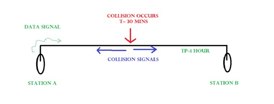
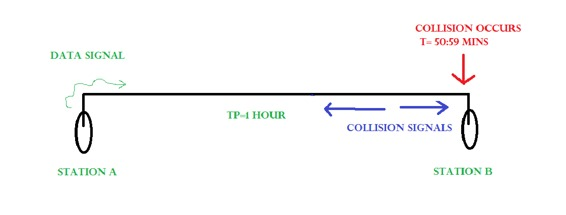

CSMA/CD (Carrier Sense Multiple Access/ Collision Detection) is a media-access control method widely used in Ethernet technology/LANs.
Consider a scenario where there are ‘n’ stations on a link and all are waiting to transfer data through that channel. In this case all ‘n’ stations would want to access the link/channel to transfer their own data.Problem arises when more than one station transmits the data at the moment. In this case, there will be collisions in the data from different stations.
CSMA/CD is one such technique where different stations that follow this protocol agree on some terms and collision detection measures for effective transmission. This protocol decides which station will transmit when so that data reaches the destination without corruption.
How CSMA/CD works?
- Step 1: Check if the sender is ready for transmitting data packets.
- Step 2: Check if the transmission link is idle?
Sender has to keep on checking if the transmission link/medium is idle. For this it continously senses transmissions from other nodes. Sender sends dummy data on the link.If it does not receive any collision signal, this means the link is idle at the moment.If it senses that the carrier is free and there are no collisions, it sends the data. Otherwise it refrains from sending data. - Step 3: Transmit the data & check for collisions.
Sender transmits its data on the link. CSMA/CD does not use ‘acknowledgement’ system. It checks for the successful and unsuccessful transmissions through collision signals. During transmission, if collision signal is received by the node, transmission is stopped. The station then transmits a jam signal onto the link and waits for random time interval before it resends the frame. After some random time, it again attempts to transfer the data and repeats above process. - Step 4: If no collision was detected in propagation, the sender completes its frame transmission and resets the counters.
How a station knows if its data collides?

Consider the above situation. Two stations, A & B.
Propagation Time: Tp = 1 hr ( Signal takes 1 hr to go from A to B)
At time t=0, A transmits its data.
t= 30 mins : Collision occurs.
After collision occurs, a collision signal is generated and sent to both A & B to inform the stations about collision. Since the collision happened midway, the collision signal also takes 30 minutes to reach A & B.
Therefore, t=1 hr: A & B receive collision signals.
This collision signal is received by all the stations on that link. Then,
How to ensure that its our station’s data that collided?
For this, Transmission time (Tt) > Propagation Time (Tp) [Rough bound]
This is because, we want that before we transmit the last bit of our data from our station, we should atleast be sure that some of the bits have already reached to the destination. This ensures that the link is not busy and collisions will not occur.
But, above is a loose bound. We have not taken the time taken by collision signal to travel back to us. For this consider the worst case scenario.
Consider the above system again.

At time t=0, A transmits its data.
t= 59:59 mins : Collision occurs
This collision occurs just before the data reaches B. Now the collision signal takes 59:59 minutes again to reach A. Hence, A receives the collision information approximately after 2 hours, that is, after 2 * Tp.
Hence, to ensure tighter bound, to detect the collision completely, Tt > >= 2 * Tp
This is the maximum collision time that a system can take to detect if the collision was of its own data.
What should be the minimum length of packet to be transmitted?
Transmission Time = Tt = Length of the packet/ Bandwidth of the link
[Number of bits transmitted by sender per second]
Substituting above, we get,
Length of the packet/ Bandwidth of the link>= 2 * Tp
Length of the packet >= 2 * Tp * Bandwidth of the link
Padding helps in the cases where we do not have such long packets. We can pad extra characters to the end of our data to satisfy the above condition.
Read next – Efficiency of CSMA/CD